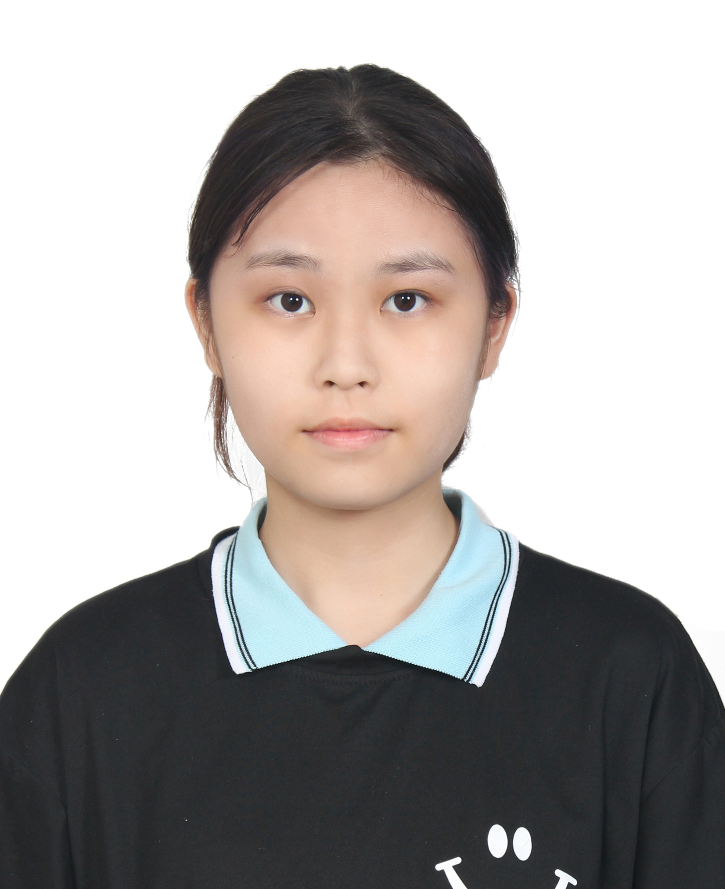

黃裕蓁
基本資料
生日：2007/05/12
星座：金牛座
目前就讀：中原大學 電機資訊大數據與智慧運算學士班
Email：yuzhenh55@gmail.com
興趣愛好
喜歡吃的東西：雞翅、喜歡吃辣、無糖茶類
喜歡的東西：貓咪、吉伊卡哇
喜歡做的事情：聽音樂做自己的事情或偶爾去跑步增強體力
喜歡的科目：數學和音樂
個人特質
我是一個樂觀和有自我要求的人，雖然有時候挺迷糊的，但我都願意花時間和心力去瞭解和去解決問題。
學習目標
提升英文能力與口語表達並希望在未來的學習中，能學習到更多技術，提升程式設計與解決問題的能力。
我也期望自己能多參與實作與專題製作，累積經驗，為之後做好準備。